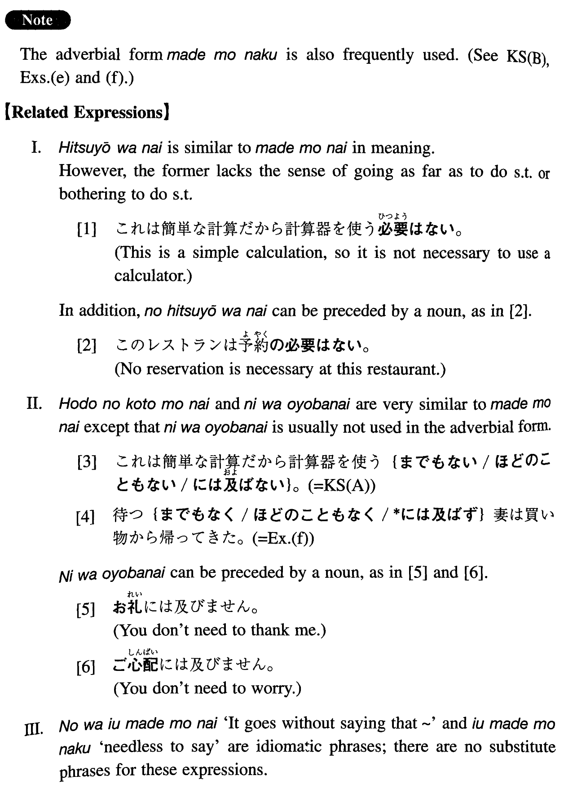

←
DoJG
→
までもない
(I. 159)
Example sentences
(ksa).
これは簡単な計算だから計算器を使う
までもない
。
This is a simple calculation, so it is not necessary (to bother) to use a calculator.
(ksb).
言う
までもなく
ジョージ・ワシントンはアメリカの初代大統領だ。
Needless to say, George Washington was the first president of the United States.
(a).
彼がみんなに尊敬されたのは言う
までもない
。
It goes without saying that he was respected by everybody.
(b).
大した用事じゃないからあなたがわざわざ行く
までもない
でしょう。
It is not important business, so it is probably not necessary for you to (take the trouble to) get there.
(c).
行けば分かることですから電話して聞く
までもありません
。
We can find out when we get there, so we don't need to call and about it.
(d).
今更申す
までもありません
が、山中先生はこの分野では指導的な立場にあるお方です。
Needless to say (now), Professor Yamanaka is a leading figure in this field.
(e).
それは説明する
までもなく
明らかなことだ。
It is so obvious that no explanation is necessary.
(f).
待つ
までもなく
妻は買い物から帰ってきた。
My wife came back from shopping without my having to wait for her.
Formation
Vinformal nonpast
までもない
話す
までもない
Not necessary (to bother) to talk
